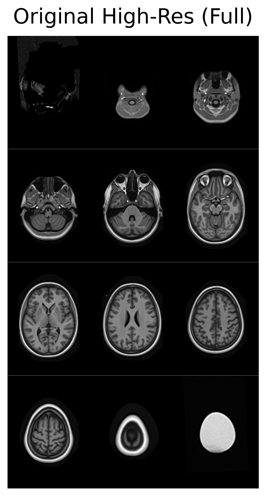
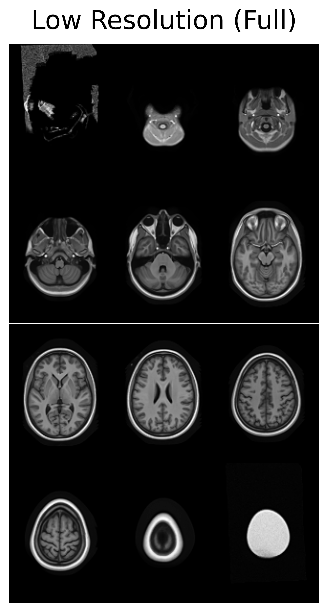
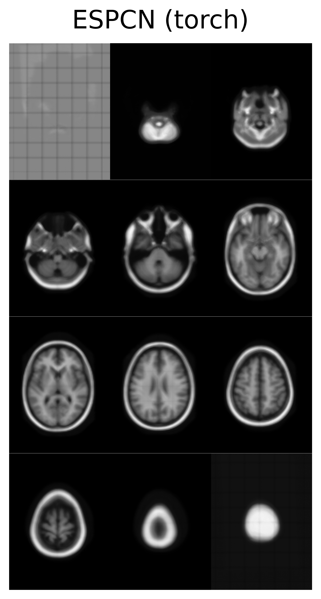
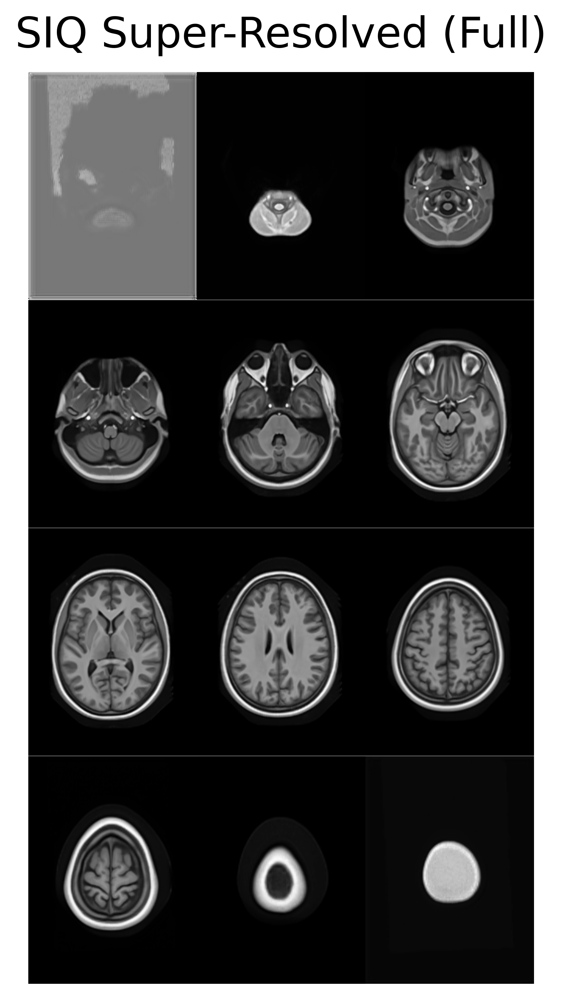
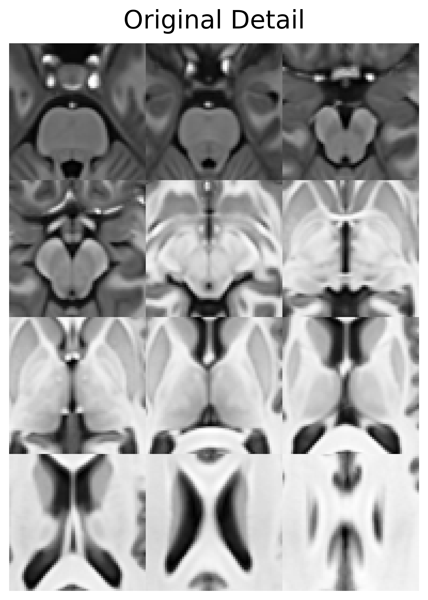
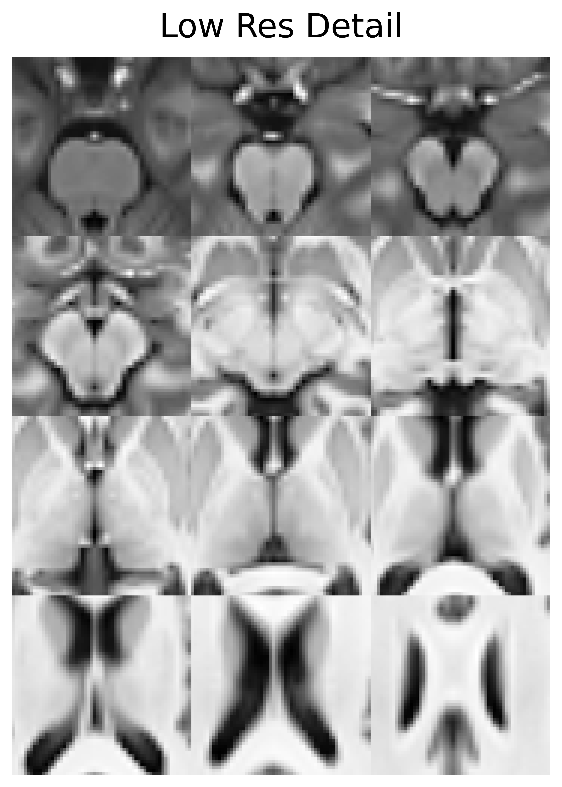
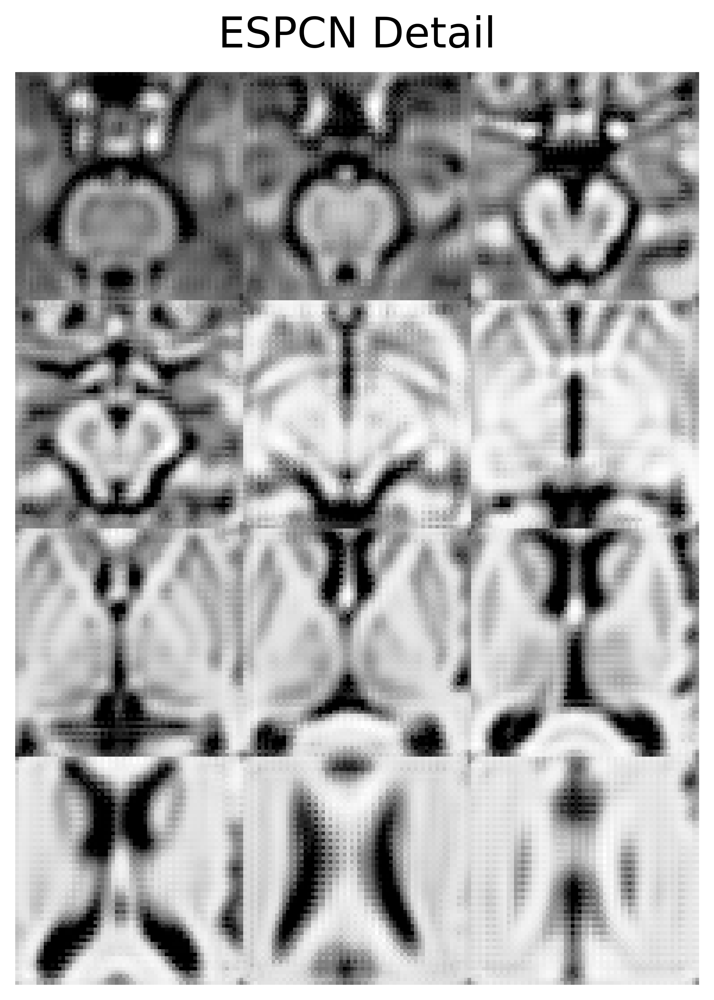
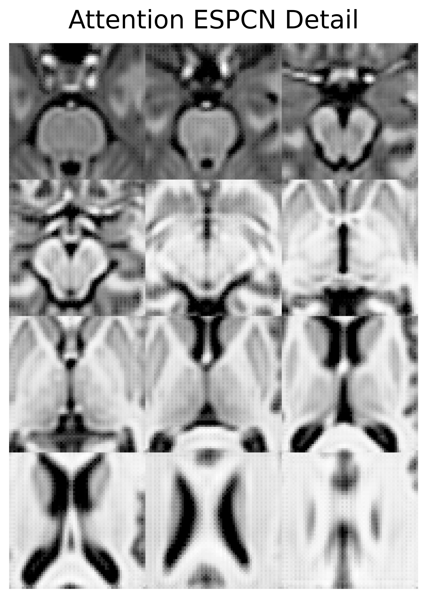
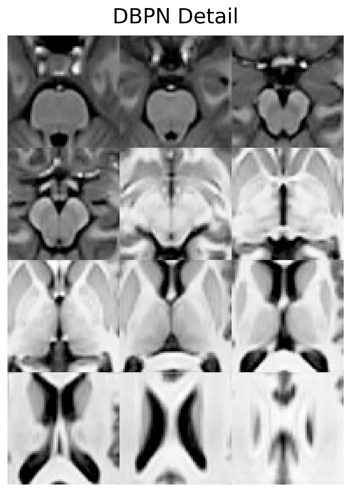

High-Performance Super Resolution for Medical Imaging
Now Optimized for Apple Silicon via Keras 3
SIQ leverages state-of-the-art Deep Back-Projection Networks (DBPN) to recover high-frequency details from low-resolution medical imaging data. Below is a real-world demonstration using OASIS brain MRI data.

Ground truth 1x1x1mm structural MRI

Simulated 2x2x2mm acquisition

Ultra-fast PixelShuffle reconstruction

Network inferred structural detail
Zooming into the cortical folds reveals the network's ability to reconstruct missing anatomical boundaries without introducing hallucinated artifacts.

Clear gray matter boundaries

Severe partial voluming effects

Fast standard reconstruction (Corr: 0.923, PSNR: 26.8 dB, SSIM: 0.925)

Enhanced details & skip connections (Corr: 0.927, PSNR: 27.0 dB, SSIM: 0.929)

Classical Back-Projection (Corr: 0.934, PSNR: 27.4 dB, SSIM: 0.936)
To train models under highly controlled, diverse conditions without boundary drop-off artifacts, SIQ features a procedural patch synthesis engine supporting brain MRI contrast, sinewaves, layered strips, organic blobs, Rician noise, and stochastic coordinate zoom.
While DBPN provides excellent results, its 3D Transpose Convolutions are computationally expensive on mobile and desktop hardware. SIQ now includes 3D ESPCN, which utilizes Pixel Shuffling to achieve up to 15x faster inference on Apple Silicon (MPS).
By replacing legacy deconvolution layers with native PixelShuffle operations, SIQ reduces full-volume processing time from minutes to seconds on M1/M2/M3 chips, while maintaining perceptual parity with deeper architectures.
siq.auto PipelineMedical image processing shouldn't require a Ph.D. in computer science. The `siq.auto` interface acts as an intelligent entry point, automatically parsing your data format, inferring the correct upsampling parameters, and routing the task to the optimal pre-trained DBPN model.
With one function call, you can achieve visual fidelity previously only available through extended scanner acquisition times.
Sometimes you don't need the whole brain upsampled. SIQ includes advanced modules like `region_wise_super_resolution` which restricts processing to regions of interest, blending the high-resolution output seamlessly into the original background space.
This approach drastically reduces GPU memory overhead for massive 3D volumes.
SIQ has been migrated to Keras 3, providing native support for both PyTorch and TensorFlow backends. You can switch backends instantly by setting a single environment variable—allowing you to leverage PyTorch MPS/CUDA or TensorFlow depending on your hardware environment.
Perfect for native PyTorch pipelines and systems using Metal Performance Shaders (MPS) on Apple Silicon or CUDA on Linux.
Optimized for established TensorFlow infrastructure, utilizing XLA compilation, TPU acceleration, or standard CUDA graphics cards.
Whether you execute SIQ via PyTorch or TensorFlow, Keras 3 guarantees exact architectural parity. Both backends construct identical layer configurations, parameter weights, and compile under identical optimizer configurations—yielding identical high-resolution outputs.